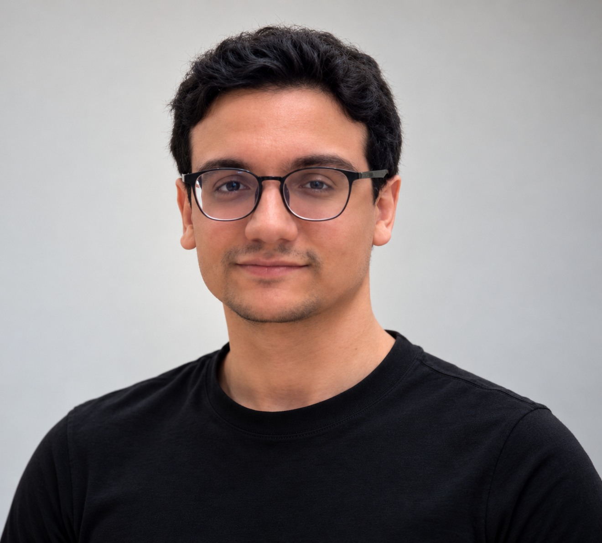
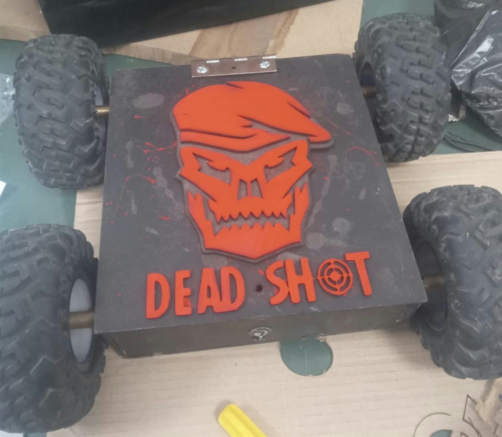
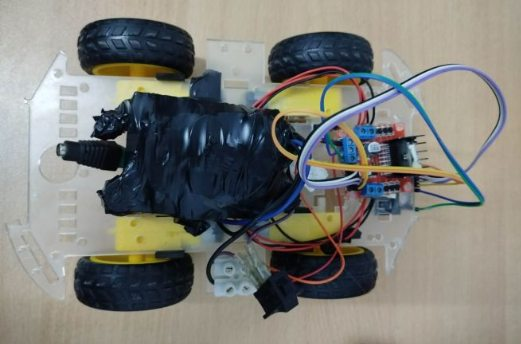
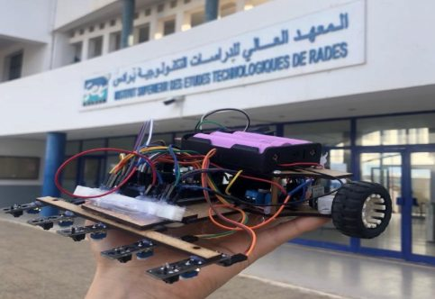
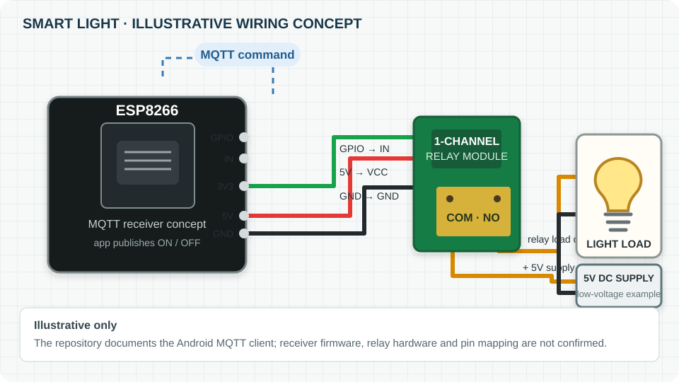
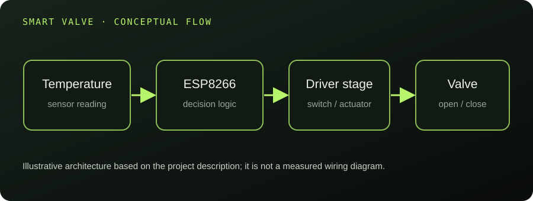

PROJECT PHOTOS · VISION / EDGE / MQTT
PROJECT PHOTOS · VISION / EDGE / MQTTSmart Traffic Management
Our final-year prototype uses Raspberry Pi, YOLOv8n, MQTT and LoRa to detect priority vehicles and coordinate a model intersection.
View project ↗BASED IN MILAN, ITALY AVAILABLE FOR OPPORTUNITIES
I'm Mohamed Aziz Turki, an AI Master's student with a background in embedded systems, IoT and robotics. I build at the intersection of software and the physical world.

AZIZ TURKI / 2026 AI · IoT · EMBEDDED SYSTEMS01 · THE PERSON BEHIND THE BUILDS
I like turning ideas into things that work · from connected devices and embedded prototypes to intelligent software and visual stories.
I'm currently pursuing a Master's degree in Artificial Intelligence for Science and Technology at the University of Milano-Bicocca. My foundation is in electronics, automation and industrial computing.
My interests span computer vision, machine learning, connected systems, robotics and creative video editing. I enjoy learning across disciplines and bringing them together in practical projects.
02 · SELECTED ENGINEERING
Selected projects across embedded systems, IoT, robotics and applied AI.
PROJECT PHOTOS · VISION / EDGE / MQTTOur final-year prototype uses Raspberry Pi, YOLOv8n, MQTT and LoRa to detect priority vehicles and coordinate a model intersection.
View project ↗
ESP32 / ROBOTICS / TEAM BUILDA team-built ESP32-controlled robot project. DEAD-SHOT earned 2nd place at ESPRIT in 2024 and 1st place at ISTIC in 2025.
View project ↗
RASPBERRY PI / ESP32 / MQTTA four-wheel home robot combining multilingual voice interaction with ESP32 movement control. Developed collaboratively with Amen Allah Bayoudh.
View project ↗
PID / IR SENSORS / ENCODERSA competition robot using IR sensors, encoders and PID steering, developed collaboratively with Amen Allah Bayoudh.
View project ↗
ILLUSTRATIVE SYSTEM DIAGRAMA connected lighting prototype linking an Android application with an ESP8266 through MQTT.
View repository ↗
ILLUSTRATIVE SYSTEM DIAGRAMAn ESP8266-based security and control prototype developed during an electronics internship.
Discuss this project ↗03 · THE CREATIVE SIDE
I edit video with an eye for rhythm, pacing and atmosphere, using motion and visual effects to shape a clear story.
I enjoy shaping footage into focused visual stories. Video samples are available on request.
04 · THE JOURNEY SO FAR
University of Milano-Bicocca · Italy
Al Maarifa Private High School
Industrial Computing · ISET Rades, Tunisia
LifEye · Tunisia
05 · THE TOOLKIT
Python · C · C++ · Java · JavaScript · SQL · PHP
Machine Learning · YOLOv8 · OpenCV · Pandas
ESP32 · ESP8266 · Raspberry Pi · MQTT · LoRa
Linux · Git · Android Studio · VS Code · After Effects
06 · HAVE A PROJECT IN MIND?